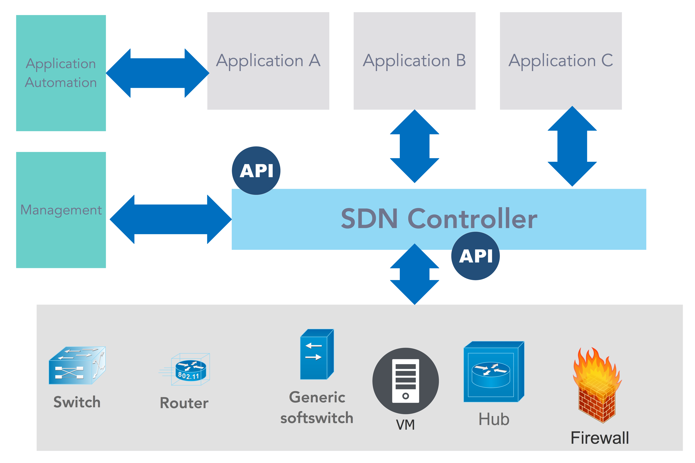
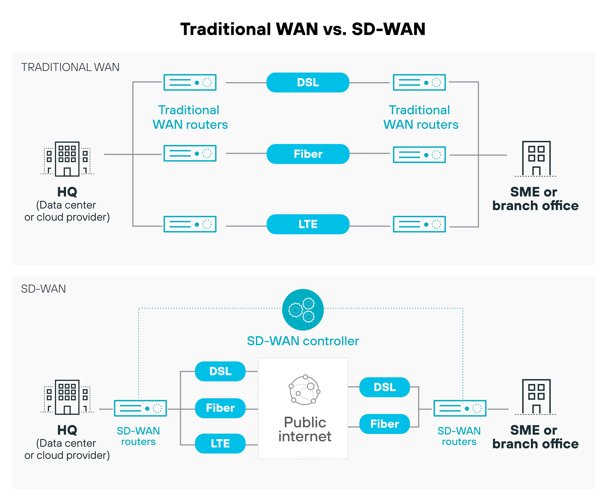

Software-defined Networking
Por Samuel Alan Hoad
Introducción y Contexto
Históricamente, la gestión de redes se ha enfrentado a un desafío crítico: la rigidez del hardware propietario. En las redes tradicionales, los dispositivos como routers y conmutadores operan como "cajas negras" donde el plano de control (la inteligencia del dispositivo) y el plano de datos (el envío físico de paquetes) están estrechamente acoplados. Esto obligaba a los administradores a configurar cada nodo de forma individual y manual, un proceso complejo propenso a errores y limitado por las funciones específicas que el fabricante decidiera incluir en el firmware.
Este paradigma resultaba insuficiente para las exigencias de flexibilidad y escalabilidad de las empresas modernas. El concepto de SDN surgió aproximadamente en 2013 como una solución para desacoplar el software del hardware, permitiendo que la red evolucione a la velocidad del software. Hoy en día, esta arquitectura es fundamental para habilitar servicios en la nube, el Internet de las Cosas (IoT) y el Edge Computing, ya que permite que los datos se muevan fácilmente entre ubicaciones distribuidas y que la infraestructura se ajuste dinámicamente según la demanda.
¿Qué es SDN?
La esencia de Software Defined Networking (SDN) es la separación estricta entre el plano de control y el plano de datos. Mientras que en una red clásica cada dispositivo toma sus propias decisiones de enrutamiento, en SDN el "cerebro" de la red se traslada a una plataforma de software centralizada que tiene una visión global de toda la infraestructura. El plano de datos permanece en los dispositivos físicos o virtuales, pero su función se reduce exclusivamente al reenvío de paquetes siguiendo las instrucciones dictadas desde arriba.
Es vital no confundir SDN con conceptos relacionados pero distintos. SDN no es simplemente virtualización de red, la cual permite segmentar redes lógicas dentro de una física; SDN va más allá al centralizar el control del enrutamiento mediante un servidor. Tampoco debe equipararse estrictamente con NFV (Network Functions Virtualization), que se enfoca en virtualizar servicios específicos como cortafuegos o equilibradores de carga, aunque ambas tecnologías suelen trabajar juntas para optimizar la eficiencia y el control de la red.
Arquitectura
La arquitectura de una SDN se organiza de forma jerárquica en tres capas fundamentales que interactúan entre sí para ofrecer una red programable y abierta.
En la base se encuentra la capa de infraestructura, compuesta por los forwarding devices. Estos pueden ser conmutadores de hardware tradicionales que soporten interfaces programables o conmutadores de software como Open vSwitch, que ofrecen mayor flexibilidad para nuevos comportamientos. Por encima se sitúa la capa de control, donde reside el Network Operating System (NOS) o controlador SDN. Este actúa como el sistema operativo de la red, gestionando servicios críticos como el seguimiento de hosts, el inventario de dispositivos y la topología de la red. Finalmente, la capa de aplicación contiene los programas que definen el comportamiento de la red, como aplicaciones de seguridad o de ingeniería de tráfico.
La comunicación entre estas capas se realiza mediante interfaces especializadas: Northbound Interface : Conecta las aplicaciones con el controlador, permitiendo que los desarrolladores programen comportamientos de red de alto nivel mediante APIs, como interfaces RESTful. Southbound Interface: Facilita la comunicación entre el controlador y los dispositivos de hardware. El protocolo más extendido para este fin es OpenFlow, que estandariza cómo el controlador debe enviar las instrucciones de manejo de paquetes a los conmutadores.

SDN frente a las redes tradicionales
La transición hacia SDN supone un cambio radical en la forma en que se concibe la infraestructura de red, como se resume en la siguiente comparativa.
| Criterio | Software Defined Networking (SDN) | Networking Tradicional |
|---|---|---|
| Control | Instancia de control centralizada | Instancias específicas en cada dispositivo |
| Integración | Separación entre hardware y control | Control integrado en el hardware |
| Programabilidad | El plano de control es programable | Plano de control propio/estático |
| Protocolos | Estándares abiertos (ej. OpenFlow) | Específicos de los fabricantes |
| Configuración | Centralizada y basada en políticas | Individual nodo por nodo |
| Escalabilidad | Flexible y fácil de escalar | Arquitectura estática difícil de modificar |
Esta transición elimina la dependencia de fabricantes específicos (vendor lock-in), ya que los administradores pueden usar un solo protocolo para comunicarse con hardware de distintos proveedores a través de un controlador abierto. Además, reduce costes operativos y de hardware, ya que los dispositivos de reenvío requieren menos inteligencia propia y el mantenimiento se simplifica mediante la gestión centralizada.
¿Cómo se organiza el control?
La implementación de SDN puede variar según cómo se distribuya la inteligencia y cómo se propaguen las reglas de flujo.
En primer lugar, podemos distinguir entre SDN simétrica y asimétrica. El modelo simétrico busca la máxima centralización en una única unidad de control para evitar redundancias, mientras que el asimétrico distribuye las tareas entre varias unidades para que los sistemas puedan seguir operando mínimamente en caso de fallo, a costa de una mayor complejidad de gestión.
| Característica | SDN Simétrica | SDN Asimétrica |
|---|---|---|
| Control | Centralización máxima | Distribución del control |
| Eficiencia | Evita redundancias de información | Presenta redundancias innecesarias |
| Resiliencia | Depende de la estabilidad de la unidad central | Los sistemas funcionan si cae el control central |
Por otro lado, la forma en que el plano de control envía instrucciones a los dispositivos de red define los modelos proactivo y reactivo. El modelo proactivo envía todas las reglas a los nodos de forma anticipada (vía broadcast/multicast), lo que simplifica la implementación pero limita la escalabilidad al aumentar la carga de la red con cada nuevo nodo. El modelo reactivo solo envía información a los dispositivos implicados cuando estos encuentran un paquete desconocido y consultan al controlador; esto es más eficiente para redes grandes, aunque puede introducir latencia inicial.
| Característica | SDN Proactiva | SDN Reactiva |
|---|---|---|
| Mensajes | Broadcast / Multicast | Tablas lookup bajo demanda |
| Implementación | Fácil de implementar | Más compleja de gestionar |
| Escalabilidad | Limitada por la carga de la red | Mejor para redes de gran tamaño |
En la práctica, muchas redes definidas por software no se adhieren estrictamente a un solo modelo, sino que suelen combinar elementos de diferentes enfoques para equilibrar simplicidad, rendimiento y redundancia.
SDN y sus tecnologías hermanas
SDN actúa a menudo como un overlay, lo que significa que puede ejecutar redes virtuales sobre la infraestructura física existente mediante túneles dinámicos, dejando el hardware subyacente intacto. Esta capacidad de abstracción es lo que permite una flexibilidad sin precedentes en entornos empresariales.
SD-WAN
Un ejemplo claro de su aplicación es la SD-WAN (Red de Área Amplia Definida por Software). Mientras que una WAN tradicional depende de circuitos físicos rígidos como MPLS, una SD-WAN permite a una empresa con múltiples sedes gestionar el tráfico de forma centralizada a través de diversos tipos de conectividad (VPN, MPLS, internet), priorizando aplicaciones críticas automáticamente según el estado de la red.

NFV
La NFV (Virtualización de Funciones de Red) complementa a SDN al permitir que las funciones de red como firewalls, se trasladen de dispositivos de hardware costosos a servidores estándar o incluso a los propios servidores del cliente. Lejos de excluirse, estas tres tecnologías se combinan: SDN proporciona el control centralizado del enrutamiento, NFV virtualiza los servicios y SD-WAN aplica estos beneficios a la conectividad de larga distancia.
Seguridad en SDN
La arquitectura SDN ofrece ventajas de seguridad disruptivas en comparación con las redes tradicionales. Al tener una visibilidad holística de toda la red, los administradores pueden detectar amenazas de forma más rápida y definir rutas seguras desde una ubicación central.
Sin embargo, esta centralización también crea nuevas superficies de ataque. El controlador SDN se convierte en el objetivo prioritario para un atacante, ya que comprometerlo significaría ganar el control total de la infraestructura. Por lo tanto, asegurar la integridad del controlador es una tarea crítica en cualquier despliegue de SDN.
Como herramienta de defensa activa, SDN permite implementar microsegmentación, creando zonas de seguridad aisladas para diferentes cargas de trabajo. Esto facilita, por ejemplo, poner en cuarentena inmediata dispositivos infectados para que no propaguen el malware al resto de la red o ajustar dinámicamente las políticas de seguridad en los conmutadores para responder a ataques de denegación de servicio (DDoS).
El problema del SPOF y cómo resolverlo
A pesar de sus beneficios, el diseño lógicamente centralizado de SDN introduce un riesgo crítico de ingeniería: el punto único de falla (SPOF). Si el controlador central cae, toda la red podría perder su capacidad de gestión.
Para resolver esto, no se utiliza un único controlador físico, sino un sistema de clustering o teaming. Esta técnica consiste en agrupar varios sistemas que trabajan en conjunto para equilibrar la carga de trabajo y asegurar que, si uno de ellos falla, los demás sigan activos y funcionales. Además, las redes grandes pueden dividirse en regiones, cada una con su propio controlador regional, que se comunican entre sí mediante protocolos de comunicación "Este-Oeste".
Redes SDN como soporte para IoT y smart cities en IMCR
Las redes definidas por software han emergido como un paradigma clave en la gestión moderna de infraestructuras de red, especialmente en entornos caracterizados por una alta heterogeneidad y dinamismo, como el Internet de las Cosas (IoT). En estos escenarios, donde coexisten numerosos dispositivos con capacidades, protocolos y requisitos diversos, SDN permite desacoplar el plano de control del plano de datos, facilitando una gestión centralizada, programable y adaptable. Esto resulta fundamental para optimizar el rendimiento, mejorar la seguridad y simplificar las tareas de mantenimiento a lo largo del ciclo de vida de los sistemas, especialmente ante el creciente volumen de datos generado por dispositivos IoT.
En sistemas IoT de pequeña o mediana escala, como los abordados en la asignatura IMCR, la adopción de una arquitectura completa basada en SDN puede ser innecesaria debido a la simplicidad y alcance reducido de la infraestructura. En estos casos, soluciones más ligeras permiten cubrir de manera eficiente los requisitos de gestión y operación, al tiempo que facilitan la comprensión de los conceptos de control centralizado y monitorización de la red. No obstante, los principios de SDN siguen siendo relevantes y pueden aplicarse en escenarios de mayor complejidad, escalabilidad o control avanzado.
Un caso particularmente representativo de la aplicación conjunta de SDN e IoT es el de las smart cities. En este contexto, SDN actúa como la infraestructura de soporte que permite gestionar de forma eficiente los servicios urbanos basados en datos, como el tráfico, el alumbrado público o la monitorización ambiental. La necesidad de operar en tiempo real, junto con los requisitos de calidad de servicio y seguridad, hace imprescindible el uso de arquitecturas de red flexibles y programables frente a los enfoques tradicionales.
Gestión centralizada de una infraestructura heterogénea
Las smart cities integran dispositivos y sistemas muy diversos, lo que introduce complejidad en la operación de la red. SDN aborda este problema mediante un modelo de control centralizado y abstracto. Control lógico unificado: Permite aplicar políticas de red de forma coherente sin configuraciones manuales dispositivo a dispositivo. Abstracción del hardware: Facilita la interoperabilidad entre equipos de distintos fabricantes mediante interfaces estandarizadas. Orquestación de recursos: Posibilita la asignación dinámica de recursos en función de las necesidades de los distintos servicios urbanos.
Escalabilidad y gestión del IoT
El crecimiento masivo de dispositivos IoT plantea retos de escalabilidad y eficiencia. - Dispositivos simplificados: La inteligencia de red se traslada al controlador, reduciendo la complejidad de los nodos de campo. - Segmentación de red: El uso de técnicas como network slicing permite aislar y priorizar distintos tipos de tráfico sobre una misma infraestructura.
Seguridad y resiliencia urbana
La protección de la infraestructura y de los datos es un aspecto crítico en entornos urbanos inteligentes. - Monitorización global: Permite detectar anomalías mediante una visión centralizada del tráfico. - Respuesta ante incidentes: Facilita el aislamiento rápido de dispositivos comprometidos. - Servicios de seguridad virtualizados: Posibilita integrar mecanismos de protección sin necesidad de hardware adicional.
Aunque las Smart Cities representan un ejemplo completo y de gran escala de la aplicación de SDN en entornos IoT, los principios y ventajas de esta arquitectura también se trasladan a otros escenarios reales de ingeniería de redes.
Otros casos de uso reales
El escenario donde SDN ha tenido mayor impacto es el de los centros de datos. Aquí, SDN mejora tres dimensiones clave: permite una gestión eficiente del tráfico interno, acelera el aprovisionamiento de nuevos servicios y facilita el escalado elástico de recursos al añadir o quitar máquinas virtuales sin necesidad de reconfiguraciones manuales costosas. Otros ámbitos de aplicación incluyen: - SD-WAN empresarial: Conecta sedes remotas de forma flexible y eficiente. - Telecomunicaciones y 5G: Permite a los proveedores ofrecer "rebanadas" de red (network slicing) y ancho de banda bajo demanda a sus clientes.
Herramientas y ecosistema
Para implementar y gestionar una infraestructura SDN, existe un ecosistema de tecnologías y protocolos: - Protocolos de comunicación: OpenFlow (el estándar más relevante), NETCONF, BGP, XMPP y OVSDB. - Controladores y Software: Open vSwitch (para conmutación por software) y controladores que ofrecen servicios de topología e inventario. - Interfaces de programación: APIs basadas en Java o interfaces RESTful (Northbound) para el desarrollo de aplicaciones nativas o integraciones en la nube.
Conclusiones y tendencias futuras
En la actualidad, SDN representa el estándar para redes flexibles, escalables y orientadas a la nube. La capacidad de gestionar la red como un recurso elástico ha transformado la infraestructura en algo mucho más parecido a los recursos de cómputo actuales. De cara al futuro, se anticipa una integración cada vez mayor con la Inteligencia Artificial, permitiendo que los controladores SDN tomen decisiones aún más inteligentes y automatizadas sobre el flujo de datos y la seguridad, consolidando la visión de centros de datos totalmente definidos por software (SDDC). Asimismo, SDN se proyecta como una tecnología clave para habilitar la gestión eficiente y centralizada de servicios urbanos en Smart Cities, facilitando la adaptación dinámica a las demandas de la ciudad y mejorando la resiliencia y seguridad de sus infraestructuras.
Referencias
David Mahler, "Introduction to SDN (Software-defined Networking)" (video).
Broadcom/VMware, "What is Software-Defined Networking (SDN)?".
IONOS, "¿Qué es SDN (Software Defined Networking)?".
IBM, "¿Qué es la red definida por el software (SDN)?".
Sahrish Khan Tayyaba, Software Defined Network (SDN) Based Internet of Things (IoT):A Road Ahead.
IBM, "¿Qué es la red definida por software (SDN)?".